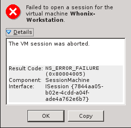

I’ll post here because my problem is related, but feel free to extract this into a new topic.
Whonix-Workstation 10 won’t start in VirtualBox 5.0.0. I know it’s a new version of Virtual Box, but it’s a stable major release, so I wonder if any work will be done to make sure Whonix 10 runs with this version. Whonix Gateway (albeit the no-GUI version) starts and runs properly. I am running the vanilla VirtualBox from Oracle, not the OSE version.
(after uploading any image , take the link of the image not the link of the website)
if u r concerns about anonymity because the servers located in US , well use free image hosting in the darknet (u can find these in hidden services wikis or …etc)
regarding Vbox+whonix:- last day i have downloaded virtualbox in my friend pc with installing whonix 10 in it. but to be honest with u i dont remember which version of the virtualbox was (didnt take the intention to look at the version of the Vbox because i didnt face any problems with versions b4 so my brain cant remember it).but it was like this : windows 8 + vbox + whonix 10 = working good.
(after uploading any image , take the link of the image not the link of the website)[/quote]
Reposted image to another imagebin

I mean exactly what it means: I run the virtualbox version installed from the virtualbox installer that’s offered by Oracle here https://virtualbox.org/wiki/Linux_Downloads (see All Distributions at the bottom of the list), not the OSE version that’s usually offered through the repositories of particular Linux distros.
For now I have just reverted to using virtualbox 4.x
More generally, when you have a problem with an error that you do not understand, do a search on the EXACT error generated. Why do that, you might ask? Because that’s exactly what all the smart Boys and Girls, do. 8)
If you cannot find relevant information, you can always file a bug report with the correct project’s developers. Again, the bug report should contain the EXACT error generated in the Bug Report Title, so others can easily find it.
However, more often than not, you’ll find you are not alone, and very often, the correct solution has already been identified.
I should also note that I am running VBox 5, and I know for a fact that the Gateways in Whonix 10, and Whonix 11, both work properly. I cannot comment on the functionality of the Workstation in VBox (yet). However, I do run many other operating systems under VBox 5 behind the Gateway, and all of them are working properly.
Aside from the fact that VirtualBox is being stupid and displays a totally useless, user unfriendly error message, which, as Linux user, I’m not used to and I don’t care to get used, for some reason you link to an ancient forum post from 2010, why? I consider this necroposting useless, considering that:
Previous VirtualBox version 4.3.x is MUCH NEWER than 2010
Whonix-Workstation worked fine in that version
This is not a problem with an error that I don’t understand. This is a problem with an error that nobody understands.
This is an open bait to start calling you names, fortunately for you I value this forum a lot, and I have to behave, even if I’m very tempted not to.
This is exactly what I did, it’s a problem with the Whonix-Workstation image and VirtualBox 5, since Whonix-Gateway works, as you have said yourself and I have wrote too in my original post (just in case if you’ve missed that part).
And this is exactly what I said above. The Gateway works for me, it’s just the Workstation that fails to start after being imported.
Then what was the point of your post? You could’ve tried to import the Workstation and see if you could reproduce the issue I’m having at least, it would take you a couple of minutes. That if you wanted to make some constructive contribution to this thread.
And I don’t see how’s this relevant to the particular problem with the Whonix Workstation.
P.S. I would be remiss if I failed to disclose that I did enjoy looking at all the smoking HOT Chinese ladies accompanying your image error link - nice work!
I have tested the Workstation 11 on VBox 5 quite extensively.
I cannot replicate the error initially reported on this thread.
From my POV, the title of the thread is 100% false. A correct thread would be titled; Whonix Workstation 11 IS KNOWN to work properly on VBox 5.
Any even slightly experienced user of VBox should be smart enough to realize if an error or corruption issue occurs within a running VBox Guest OS, the very first thing you should try is increasing the memory allocation and or the number of CPUs exposed to the VBox Guest. That advice is certainly not just limited to Whonix Guests.
I refuse to spend even one additional second of my life on the non-issue, ‘issue’ raised by this ridiculous thread.
Even though the Workstation 11 runs perfectly, and (almost everything) works, there are several significant shortcomings which need to be addressed. I will start a new thread pertinent to that topic.
Digging a bit more in the host logs, I found that in fact the VirtualBox process spawn at start crash and dump some logs in the Mac Console. I guess this is more a VirtualBox issue.
If anyone has a workaround available, please share.
The VirtualBox forum post linked above is not discussing the error message that OP reported. Please make sure that you are getting the EXACT same error message:
Result Code: NS_ERROR_FAILURE (0x80004005)
Component: SessionMachine
Interface: ISession {7844aa05-b02e-4cdd-a04f-ade4a762e6b7}
Sounds like a VB issue fixed in 5.1.8. Recommendation is to upgrade version of VirtualBox. (Disabling audio also appears to have worked for some.)
You can download latest version here along with checksums: http://download.virtualbox.org/virtualbox/5.1.10/ !!! However, these downloads are not signed !!! Checksums guarantee integrity of download - they don’t verify authenticity. I don’t know how OSX package management works. I believe Oracle only offers signed .debs & .rpms.